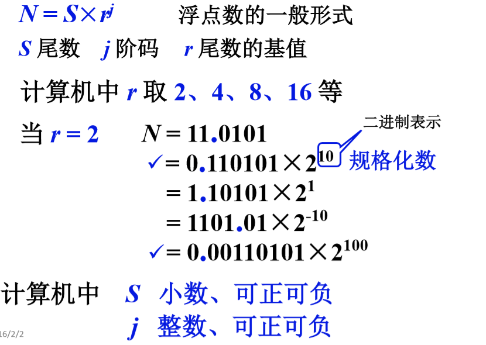
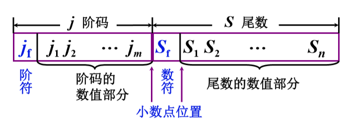
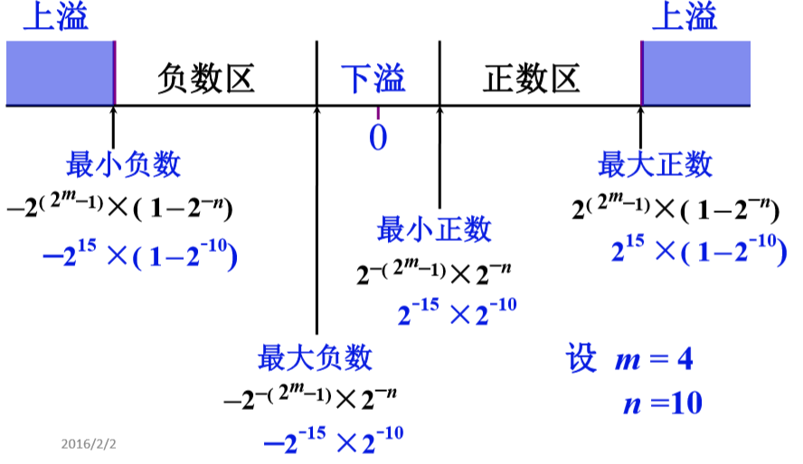
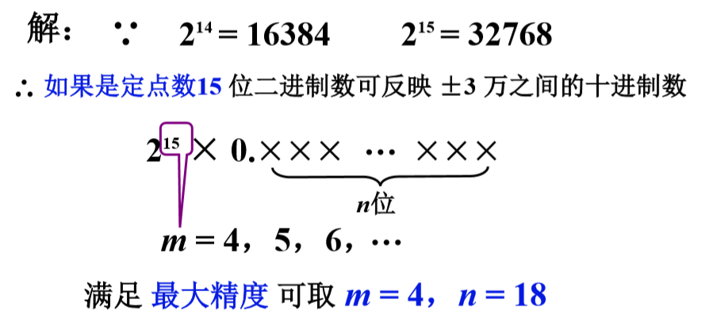
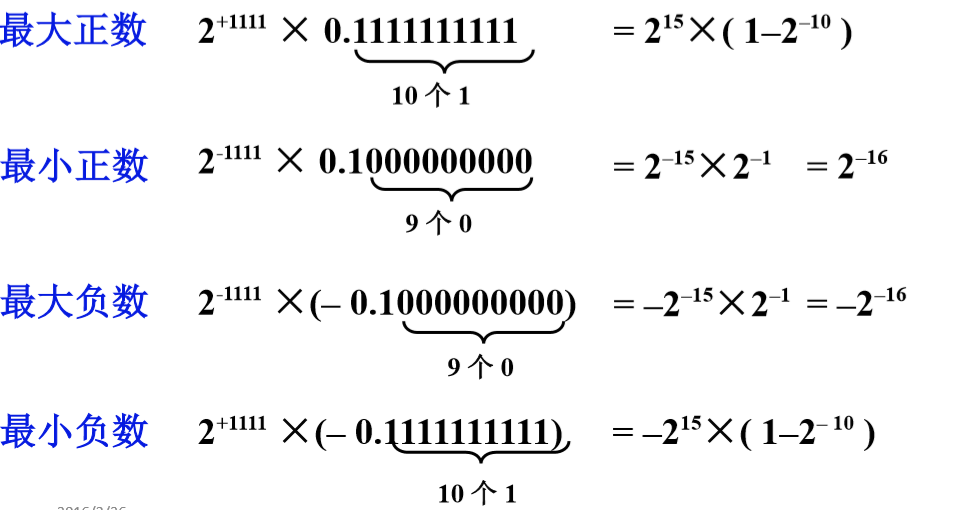
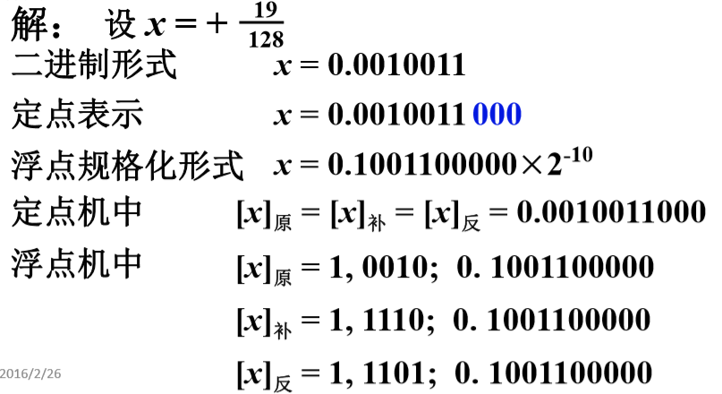
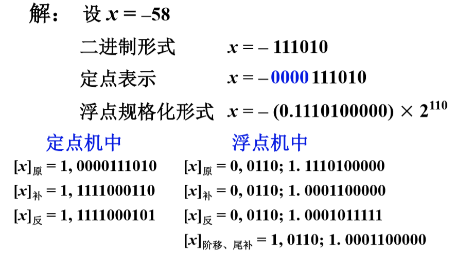
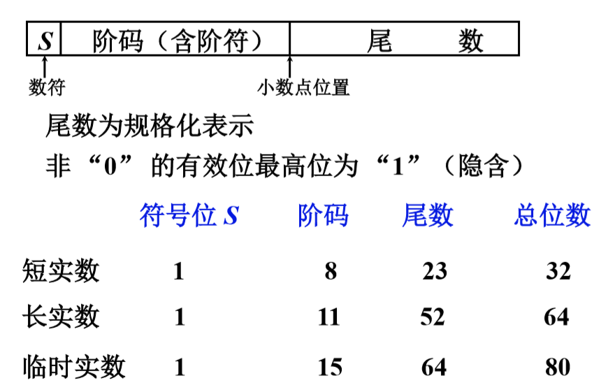

数的定点表示与浮点表示 链接到标题
为什么要引入浮点表示 链接到标题
-
编程困难，程序员要调节小数点的位置
-
数的表示范围小，为了能表示两个大小相差很大的数据，需要很长的机器字长。
- 例如：太阳的质量为 0.2_10^34 克，一个电子的质量大约为 0.9_10^-27 克，两者差距为 10^61 以上，若用定点数据表示：2^x>10^61，解得 x>203 位。
-
数据存储单元的利用率往往很低。
浮点表示 链接到标题

浮点数的表示形式 链接到标题

- Sf 代表浮点数的符号
- n 其位数反映浮点数的精度
- m 其位数反映浮点数的表示范围
- jf 和 m 共同表示小数点的实际位置
浮点数的表示范围 链接到标题
上溢： 阶码 > 最大阶码
下溢： 阶码 < 最小解码，按机器零处理

练习 链接到标题
设机器数字长为 24 位，欲表示 ±3 万的十进制数，试问在保证数的最大精度的前提下，除阶符、数符各取 1 位以外，阶码、尾数各取几位？

浮点数的规格化形式 链接到标题
- r=2，尾数最高位为 1
- r=4，尾数最高 2 位不全为 0
- r=8，尾数最高 3 位不全为 0
基数不同，浮点数的规格化形式不同。
浮点数的规格化 链接到标题
-
r=2
- 左规，尾数左移一位，阶码减 1
- 右规，尾数右移一位，阶码加 1
-
r=4
- 左规，尾数左移两位，阶码减 1
- 右规，尾数右移两位，阶码加 1
-
r=8
- 左规，尾数左移三位，阶码减 1
- 右规，尾数右移三位，阶码加 1
基础 r 越大，可表示的浮点数的范围越大 基数 r 越大，浮点数的精度降低
例题 链接到标题
设 m=4，n=10，r=2，尾数规格化后的浮点数表示范围

将 +19/128 写成二进制定点数、浮点数及在定点机和浮点机中的机器数形式。其中数值部分均取 10 位，数符取 1 位，浮点数阶码取 5 位(含一位阶符)，尾数规格化。

19/128 用二进制表示形式，19 每次除 2，小数点向左移动一位。
将-58 表示成二进制定点数和浮点数，并写出它在定点机和浮点机中的三种机器数及阶码为移码、尾数为补码的形式。

机器零 链接到标题
- 当浮点数尾数为 0 时，不论其阶码为何值按机器零处理。
- 当浮点数阶码等于或小于它所表示的最小数时，不论尾数为何值，按机器零处理，如 m=4，n=10。
- 当阶码和尾数都用补码表示时，机器零为 x,xxxx;0.00…0, 阶码=-16: 1,0000;x.xx…x.
- 当阶码用移码，尾数用补码表示时，机器零为 0,0000;0.00…0,有利于机器中”判 0”电路的实现。
IEEE754 标准 链接到标题
